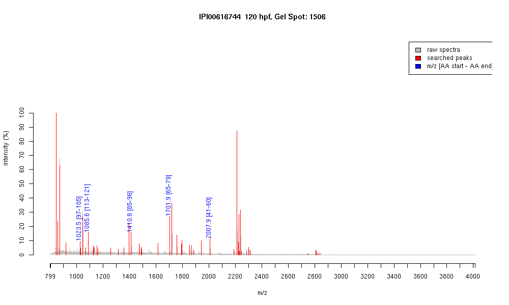

| Name | PREDICTED: similar to alpha tubulin subunit isoform 4 |
|---|---|
| MW | 32543.6 |
| PI | 4.57 |
| Mascot Protein Score | 88 |
| Masses (matched / unmatched) | 5 / 57 |

| Peptide | MZ (calc) | MZ (observed) | Error (DA) | Error (PPM) | Start | Stop | Modifications |
|---|---|---|---|---|---|---|---|
| EDAANNYAR | 1023.449 | 1023.4518 | 0.0028 | 3 | 97 | 105 | |
| EIIDLVLDR | 1085.6201 | 1085.6169 | -0.0032 | -3 | 113 | 121 | |
| QLFHPEQLITGK | 1410.7739 | 1410.764 | -0.0099 | -7 | 85 | 96 | |
| AVFVDLEPTVIDEVR | 1701.9058 | 1701.9021 | -0.0037 | -2 | 65 | 79 | |
| TIGGGDDSFNTFFSETGA | 2007.8929 | 2007.8969 | 0.004 | 2 | 41 | 60 |